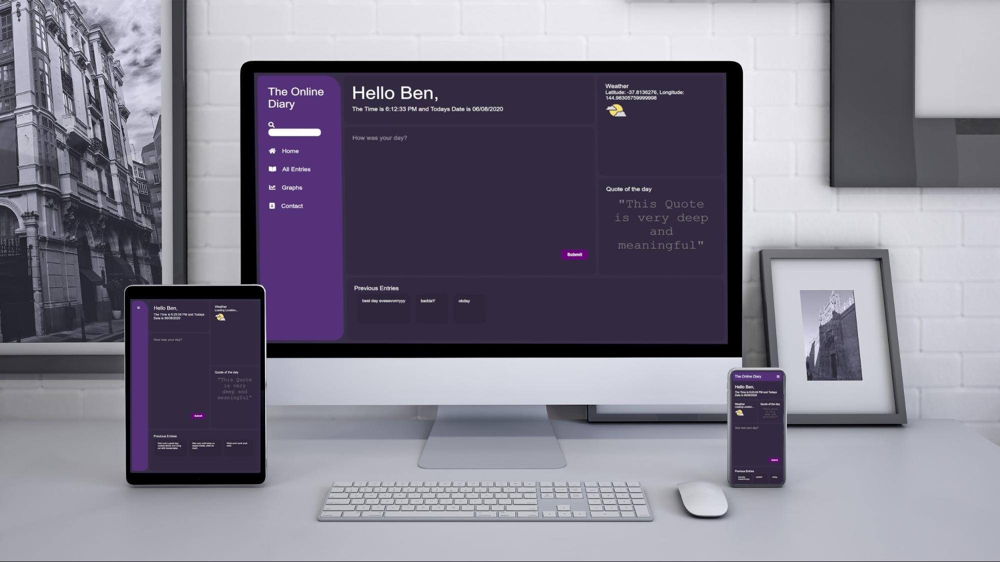
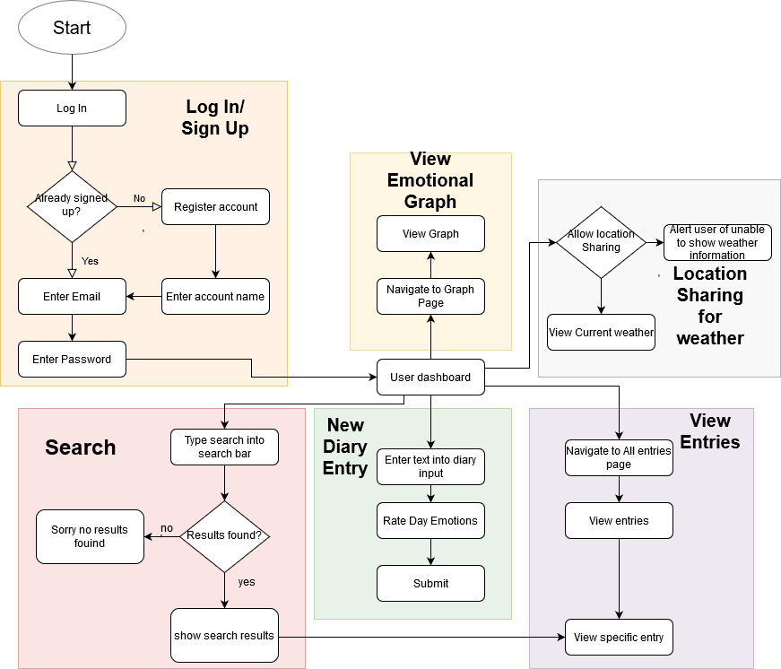
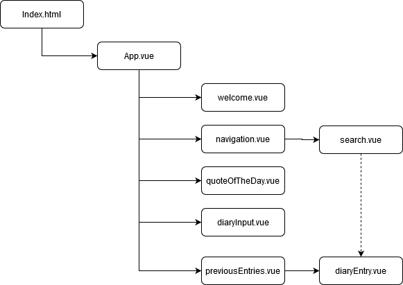

Project Proposal
This website's purpose is to allow a user to log in or sign up to record their daily thoughts and emotions in an online diary. The user can do this by typing text about their day and using sliders to rate their emotions before saving, other information will also be added to each diary entry, such as the date, providing each entry with rich context to that particular day. The user can also re-read previous entries and also compare how the emotions change from day to day via a line graph. This website is also accessible on a wide variety of devices because it utilises responsive design practices.
Regular diary users could benefit a lot with the advantages of using a digital service instead of physical diaries, we aim to create value for these customers by solving the challenges faced with physical media such as; potentially losing your diary and information, it not being secure so anyone can read it and having to carry it around all the time. Our solution solves these issues saving all your entries, only you can read and write them and from any device!
People that are interested in their emotional wellbeing will also find this website very useful as the ability to record your emotions as well as see a graph of your emotions over time can be very insightful. This will bring value to this audience as it something they aim to improve on.
This approach of entwining the emotions of the day along with your general thoughts may not be that radical but to then see how these emotions change over time dynamically will hopefully prove to be something new, entertaining and insightful
The main features of this website will be presented clearly on the first page allowing us to get straight to what we want to do which is write in our diary, even if its in a hurry
This website will be easy to use in part due to the styling and lack of clutter, it will present the information clearly and precisely with an emphasis on the typography to draw the user to the main elements
| User Story | Acceptance Criteria |
| As an online diary user i want to be able to write about my day and rate my emotions that day |
|
| As an online diary user i want to be able to save my diary entries |
|
| ... I want to my diary entry to have additional information added automatically such as date and time |
|
| ...I want my diary entries to look good on multiple devices |
|
| ...I want to be able to view my emotional scorings via a graph |
|
| ...I want the functionality to delete a diary entry |
|
| ...I want to be able to search my entries |
|
| ...I want to have a menu at the top of the page on mobile |
|
| ...I want a menu on the side on desktop |
|
| ...I want to be shown a quote of the day |
|
| ...I wanted to be greeted using my name |
|
| ...I want the current weather to be shown |
|
| Conditionals and loops | To apply control structure such as “v-if” to check if we should show something to the user as well as allowing us to loop over objects in an array, will be used to loop through diary entries using “v-for” |
| Declarative rendering | Allows us to render dynamic data from vue js to the dom in a way that is easy and straightforward to use by placing our data inside of {{}} brackets inside in between html tags |
| Handling user input / Event handling | Using vues own event listeners such as “v-on” to listen for clicks or hover on our dom elements. Using V-on, vue will then call our method if the conditions are reached such as click or hover and also using the v-model to two way data bind information from the diary text input to our actual data in vue |
| Data and methods | Core component of any language or framework vue has its own implementation of data and methods of which we will be relying on heavily. All our data will be stored inside our vue instance as well as all of our methods to to ensure proper encapsulation |
| Data binding | by using v-model we can make our data in that our user has entered into our diary text input be binded to our data in vue |
| Components | To allow reusability and encapsulation in our code, some of these are detailed below. Will also make use of the template tags that vue provides |
| Vue instance | This is where the vue instance is declared (lives) and also where our custom components are included. This is mandatory for any vue app to include |
| diaryEntry.vue | Will render a diary entry. It will have its information passed to it via props and render the diary text to the DOM along with the date and time using html H1, H2 and P tags. |
| weather.vue | This component is responsible for collecting the location information of the user then making an API call to a weather API for the current weather conditions. will display this data inside the DOM using H1, H2 and P tags along with Images to visually show the weather type |
| diaryInput.vue | Will render the text input, emotional sliders and the submit button using html elements such as text area ,H, P and Button. It will also use v-bind to bind the input of the diary entry and the emotional sliders to relevant data inside our vue component. It will also use v-on on our button to call our submit method which will also include data validation. |
| previousEntries.vue | will render a list of diaryEntries using v-for and organise them into a viewport where they can be scrolled, this is to be used on the home page and also the view entries page |
| quoteOfTheDay.vue | this will be responsible for accessing a quote api and then render this data using H1 and P elements |
| navigation.vue | Will render the page links for our website along with the search bar. This component will be very dynamic and be referenced via css media queries to change the display so that on desktop it is visible on the left hand side of the website, tablet mode it will be on the left hand side collapsed and mobile view will be where it is on the top of the screen also collapsed by default. As per the user requirements |
| welcome.vue | used to display a welcome message to the user using their own name that they logged in with as well as display the current time and date |
| Search.vue | takes text input from user and will return list of diary entries matching search query |
| Index.html | The home page for my website. Most of the sites functionality will be in this page, it is where the user will first be welcomed using their name, input new diary entries, see current date and time, current weather, quote of the day and a small selection of previous entries. This page serves as a place where all my custom components will render to, meaning the primary job of the index page is to allocate these components spaces in the DOM |
| Graph.html | Responsible for showing a graph that is populated with our emotional data we captured in each of our diary entries. Time on the X axis and Emotional intensity on the Y axis |
| AllEntries.html | This page will show all of the previous diary entries and make use of our previousEntries.vue component to render each of our entries |
| Entry.html | Where you will view our specific diary entries in full screen, this will implement our diaryEntry.vue component to render this information |
| Styles.css | Responsible for the structure and style of our pages and the overall “responsiveness”, Utilizing things such as grids and flexbox to appropriately manage our layout and then manipulating these layouts using media queries to be effective at showing our information on each page. |
| images.png | For the graphical elements of the site such as weather icons |
To view the interactive demo please go to Here
Props - Props are the way of passing variables between components in vue.js. They’re read only and passed down the component tree. They can be of many data types and have default values. I will use props when the user wants to read a diary entry, the data must be passed into this diary entry via props.
Component Registration - When we define components we generally use camel case. Usually a component's scope is global but we can register it locally. When the scope is global it can be used in the template of any root Vue instance. If we make the component registration private then it can be left out of our final build meaning less js for the client to download, improving performance
Enter/Leave & List Transitions - We can use transitions to make our page more visually appealing. These effects can be applied when items are inserted, updated, or removed from the DOM. This is useful as it will automatically apply the classes for the css transitions to our items.
This website will be capable of the following functions:
The core functionality of the website is accessible from the dashboard after you log in.
Here is a user journey of the websites core functions
Below is the hierarchy of components for the index page. As we can see a diary entry can be accessed from either the search.vue or previousEntries.vue. Diary entry must be the child component so we can pass information to it via props
I believe although ambitious, this project proposal should serve as a template for how the site will be made. By prioritizing the user stories and aiming to complete 2 a week i should be on schedule.